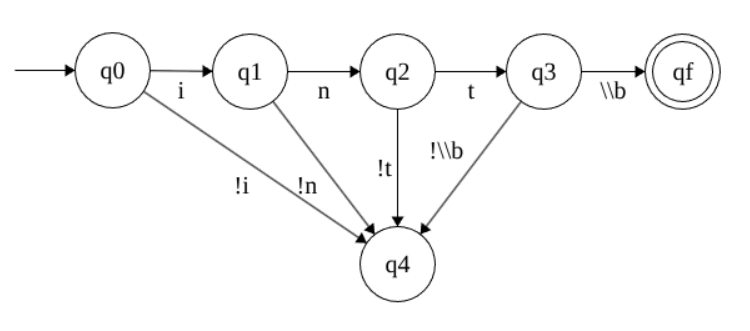
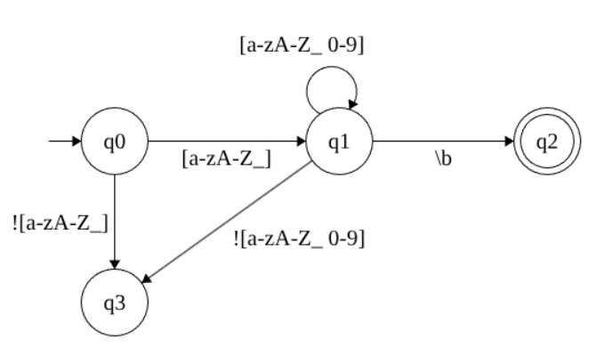
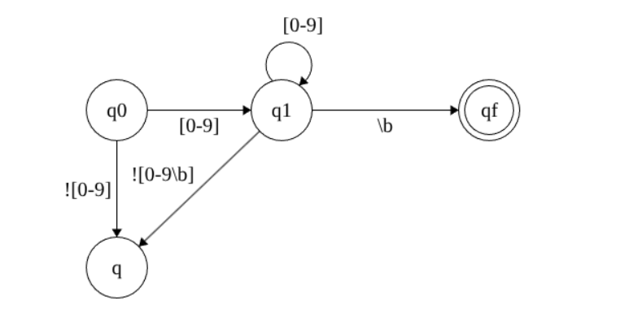

So I wrote a lexer in pure C for my Nano C Compiler (nanocc). In this post, I’ll walk you through the design and implementation of the lexer, explaining the key components and decisions made along the way. I’m assuming you have basic knowledge of regular expressions and finite automata.
I’ve only implemented a subset of C (no structs, pointers, arrays, etc.) for now, but the lexer can be easily extended to support more features in the future.
Introduction
Let’s start with what a lexer is. A lexer (or lexical analyzer) takes source code as input and constructs tokens, which is just a struct as shown below:
typedef struct {
CTokenType type; // token category produced by the lexer
const char* start; // source text matched for that token
int length; // length matched
} CToken;
here CTokenType refers to an enum which defines all possible token categories, such as keywords, identifiers, literals, operators, etc.
typedef enum {
INVALID, INT, VOID, RETURN, IF, ELSE, QUESTION, COLON,
DO, WHILE, FOR, BREAK, CONTINUE, TILDE, DECREMENT, NOT,
MINUS, PLUS, STAR, SLASH, PERCENT, AND, OR, ASSIGN,
EQUAL, NOT_EQUAL, LESSTHAN, GREATERTHAN, LESS_EQUAL, GREATER_EQUAL,
IDENTIFIER, CONSTANT, LPAREN, RPAREN, LBRACE, RBRACE, SEMICOLON,
COMMA,
} CTokenType;
Example:
int factorial(int n) {
int ret;
if (n <= 1) {
ret = 1;
} else {
ret = n * factorial(n - 1);
}
return ret;
}
The lexer will go throught the above code and produce a sequence of tokens like this:
[INT, "int"]
[IDENTIFIER, "factorial"]
[LPAREN, "("]
[INT, "int"]
[IDENTIFIER, "n"]
[RPAREN, ")"]
[LBRACE, "{"]
[INT, "int"]
[IDENTIFIER, "ret"]
[SEMICOLON, ";"]
[IF, "if"]
[LPAREN, "("]
[IDENTIFIER, "n"]
[LESS_EQUAL, "<="]
[CONSTANT, "1"]
[RPAREN, ")"]
[LBRACE, "{"]
[IDENTIFIER, "ret"]
[ASSIGN, "="]
[CONSTANT, "1"]
[SEMICOLON, ";"]
[RBRACE, "}"]
[ELSE, "else"]
[LBRACE, "{"]
[IDENTIFIER, "ret"]
[ASSIGN, "="]
[IDENTIFIER, "n"]
[STAR, "*"]
[IDENTIFIER, "factorial"]
[LPAREN, "("]
[IDENTIFIER, "n"]
[MINUS, "-"]
[CONSTANT, "1"]
[RPAREN, ")"]
[SEMICOLON, ";"]
[RBRACE, "}"]
[RETURN, "return"]
[IDENTIFIER, "ret"]
[SEMICOLON, ";"]
[RBRACE, "}"]
tl;dr: It breaks down source code and classifies it into different types of tokens, which is further used by the parser.
There are several libraries and tools available for building lexers, such as Flex, ANTLR, and others. However, I chose to implement my own lexer in pure C for a few reasons:
- Learning experience
- Clang and GCC use hand-written lexers
- No bloat, more control and moreover I’m not a fan of abstractions
Initially, I implemented the lexer in C++ using the std::regex library. Since production compilers like Clang and GCC use hand-written lexers, I wanted to write it in pure C without relying on the regex library.
Design and Implementation
Main Lexer Function
So, now that we have some basic understanding of what a lexer is, let’s take a top-down look at it:
CTokenVec clexer(char* s, size_t slen, bool debug) {
// init all members to 0/NULL
CTokenVec tokens = {0};
size_t pos = 0;
bool matched;
size_t match_length;
CTokenType class_type;
while (pos < slen) {
if (isspace(s[pos])) {
pos++;
continue;
}
match_length = 0;
class_type = INVALID;
matched = false;
for (int i = 0; i < NUMFMA; i++) {
char* remainder = s + pos; // s[pos:]
int curr_match_length;
if ((curr_match_length = token_specs[i].second(remainder)) != 0) {
// what if they are equal? how to decide? keep the first one
if (curr_match_length > match_length) {
class_type = token_specs[i].first;
match_length = curr_match_length;
matched = true;
}
}
}
assert(class_type != INVALID);
if (!matched) {
LexerRaiseError("Lexical error at position %zu: unexpected character '%c'\n", pos,
s[pos]);
}
// add to `tokens`
tokenPushBack(tokens, class_type, s + pos, match_length);
// remove substr of the string now that it is tokenized
pos += match_length;
}
if (debug) {
printf("----- Lexical Analysis -----\n");
tokensPrint(tokens);
printf("----------------------------\n");
}
return tokens;
}
Let’s go line by line (we will review some parts again in detail later):
-
We return a array of tokens, represented by
CTokenVec, which is just a simple dynamic array implementation forCTokenstructs. We take in the C source code as a stringsalong with its lengthslenand adebugbooleanCTokenVec clexer(char* s, size_t slen, bool debug) { -
Intialize
CTokenVec tokensto0 or NULLto store the tokens:CTokenVec tokens = {0};typedef struct { CToken* items; // array of Tokens size_t count; // number of Tokens in the Vec size_t capacity; // actual capacity of Vec } CTokenVec; -
poskeeps track of our current position in the input source code stringsize_t pos = 0; -
matchedis a flag to indicate if we found a string match for any token typebool matched; -
match_lengthstores the length of the matched substringsize_t match_length; -
class_typestores the type of token matchedCTokenType class_type; -
The main loop continues until we reach the end of the input string
while (pos < slen) { -
We skip whitespace characters using
isspace()if (isspace(s[pos])) { pos++; continue; } -
For each position in the string, we iterate over all token specifications defined in
token_specsand try to match the input string against each token typefor (int i = 0; i < NUMFMA; i++) { char* remainder = s + pos; // s[pos:] int curr_match_length; if ((curr_match_length = token_specs[i].second(remainder)) != 0) {Each entry in
token_specsconsists of aCTokenTypeand a function pointer that points to a function which tries to match the input string against a token type and returns the length of the matched substring (or0if no match)typedef struct { CTokenType first; int (*second)(const char*); } CTokenSpec;CTokenSpec token_specs[] = {{INT, int_fsm}, // `int` keyword {VOID, void_fsm}, // `void` keyword {RETURN, return_fsm}, // `return` keyword {IF, if_fsm}, // `if` keyword {ELSE, else_fsm}, // `else` keyword ... // many more entries {IDENTIFIER, identifier_fsm}, // variable/function names {CONSTANT, constant_fsm}, // numeric literals {LPAREN, lparen_fsm}, // `(` symbol {RPAREN, rparen_fsm}, // `)` symbol {LBRACE, lbrace_fsm}, // `{` symbol {RBRACE, rbrace_fsm}, // `}` symbol {SEMICOLON, semicolon_fsm}, // `;` symbol {COMMA, comma_fsm}}; // `,` symbol -
If a match is found (i.e
curr_match_lengthis not0), we updateclass_type,match_length, and setmatchedtotrue -
Hold on, there are some gotchas here, let’s take a look at them:
-
Suppose we have two token types:
LESS_THAN(<) andLESS_EQUAL(<=). If the input string is<=, both token types will match, but we want to prioritize the longer match (<=in this case). To handle this, we keep track of the longest match found so far and only updateclass_typeandmatch_lengthif the current match is longer than the previous one. More examples of this are==vs=,>=vs>,++vs+, etc. -
Now let’s take the string
int. It can match both theINTtoken type and theIDENTIFIER(variable/function name) token type. To resolve this ambiguity, we define the order of token specifications intoken_specssuch that keywords likeINTare checked before more general types likeIDENTIFIER. This way, if a keyword is matched, it takes precedence over the identifier match.
for (int i = 0; i < NUMFMA; i++) { char* remainder = s + pos; // s[pos:] int curr_match_length; if ((curr_match_length = token_specs[i].second(remainder)) != 0) { // FOCUS HERE: After this line // GOTCHA 1: Prioritize longer matches // GOTCHA 2: Order of token_specs matters; for example keywords vs identifiers if (curr_match_length > match_length) { class_type = token_specs[i].first; match_length = curr_match_length; matched = true; } } } -
-
After checking all token types, if no match is found, we raise a lexical error
-
If a match is found, we create a new
CTokenwith the matched type, starting position, and length, and add it to thetokensarray usingtokenPushBackfunctiontokenPushBack(tokens, class_type, s + pos, match_length); -
If no token type matches the current position in the input string, we raise a lexical error indicating an unexpected character
if (!matched) { LexerRaiseError("Lexical error at position %zu: unexpected character '%c'\n", pos, s[pos]); } -
Finally, we advance the
posby the length of the matched substring and continue the looppos += match_length;
Okay, so let’s take a look at the CToken struct again:
typedef struct {
CTokenType type; // token category produced by the lexer
const char* start; // source text matched for that token
int length; // length matched
} CToken;
Here instead of allocating new memory for the matched substring, we simply store a pointer to the starting position of the match in the original input string along with its length.
This approach avoids unnecessary string allocations and copies, making the lexer more efficient. (although in the C++ version I did allocate new strings for each token, that’s something which will be improved in future. But the C version is already optimized in this regard)
Regex Engine Implementation
Each token type has its own Finite Automaton implemented as a function that takes the pointer to the input string and returns the length of the matched substring (or 0 if no match).
Before going into the details of each FSM implementation, let’s take a look at their std::regex counterparts from my initial C++ implementation:
std::pair<TokenType, std::regex> token_specs[] = {
// "keywords" should get more priority than "identifiers", so lex them first
{TokenType::INT, std::regex("int\\b")},
{TokenType::VOID, std::regex("void\\b")},
... // more keywords
// more token types with their regex patterns
{TokenType::IDENTIFIER, std::regex("[a-zA-Z_]\\w*\\b")}, // variable/function names
{TokenType::CONSTANT, std::regex("[0-9]+\\b")}, // numeric literals
{TokenType::LPAREN, std::regex("(")},
{TokenType::RPAREN, std::regex(")")},
{TokenType::LBRACE, std::regex("{")},
{TokenType::RBRACE, std::regex("}")},
{TokenType::SEMICOLON, std::regex(";")},
// function args separator
{TokenType::COMMA, std::regex(",")},
};
Here \\b denotes a word boundary, meaning something which is not a word character (alphanumeric or underscore) follows the matched keyword. This ensures that we don’t match keywords that are part of longer identifiers (e.g., int68 should not match the int keyword).
/* helper function */
/// @brief everything except `0-9`, `a-z`, `A-Z`, `_` => `\\b` is true
/// @param c
/// @return if `c` is `std::regex("\\b")` return `true` else `false`;
bool _iswordbreaker(char c) {
return !isalnum(c) && c != '_';
}
Now, let’s implement the Finite State Machine (FSM) for int in C:

/// @brief int\\b
int int_fsm(const char* s) {
if (s[0] != 'i' || s[1] != 'n' || s[2] != 't' || !_iswordbreaker(s[3])) {
return 0;
}
return 3;
}
Now let’s implement the FSM for identifiers and constants, (other’s are easy and similar like int_fsm):

/// @brief `std::regex("[a-zA-Z_]\\w*\\b")`
/// @param s
/// @return match length if it matches else 0
int identifier_fsm(const char* s) {
int len = 0;
if (!isalpha(s[0]) && s[0] != '_') {
return 0;
}
len++;
int i = 1;
while (!_iswordbreaker(s[i])) {
if (!isalnum(s[i]) && s[i] != '_') {
return 0;
}
i++, len++;
}
return len;
}

/// @brief `std::regex("[0-9]+\\b")` => one or more digits
/// @param s
/// @return match length if it matches else 0
int constant_fsm(const char* s) {
int len = 0;
if (!isdigit(s[0])) {
return 0;
}
len++;
int i = 1;
while (!_iswordbreaker(s[i])) {
if (!isdigit(s[i])) {
return 0;
}
i++, len++;
}
return len;
}
C++ Frontend
To make the C lexer usable in my C++ nanocc compiler, I created a simple C++ wrapper function around the clexer function:
namespace nanocc {
std::deque<Token> lexer(std::string& s, bool debug) {
CTokenVec c_tokens = clexer(const_cast<char*>(s.c_str()), s.size(), debug);
std::deque<Token> tokens;
tokens.resize(c_tokens.count);
for (size_t i = 0; i < c_tokens.count; i++) {
Token token;
token.type = static_cast<TokenType>(c_tokens.items[i].type);
// TODO(VachanVY): can we avoid this allocation? use string_view?
token.lexeme = std::string(c_tokens.items[i].start, c_tokens.items[i].length);
tokens[i] = std::move(token);
}
freeCTokens(c_tokens);
return tokens;
}
} // namespace nanocc
Here, we convert the C-style tokens returned by clexer into C++ Token objects used in nanocc. Note that we allocate new strings for each token’s lexeme here, which will be optimized in the future.